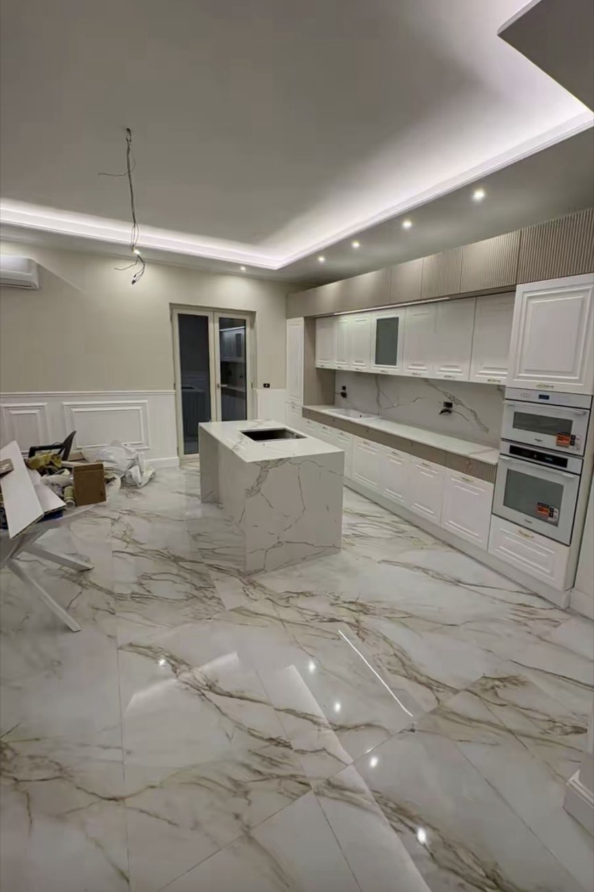
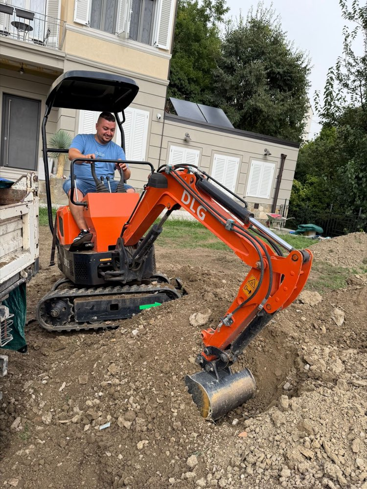
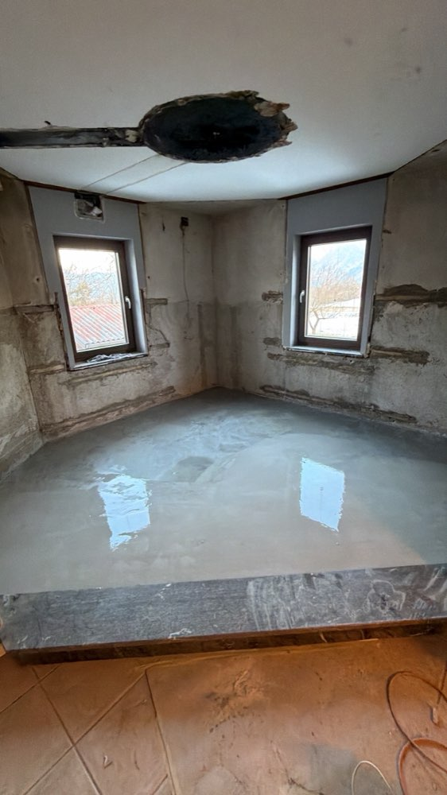
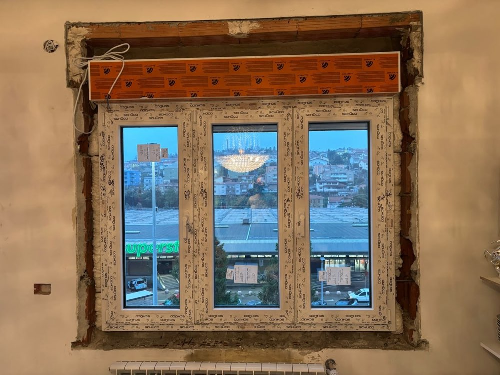
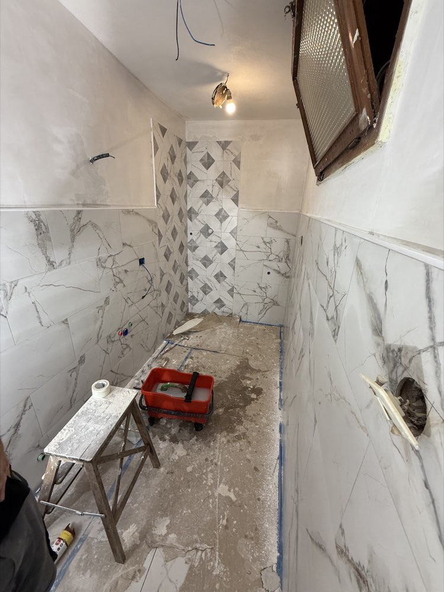
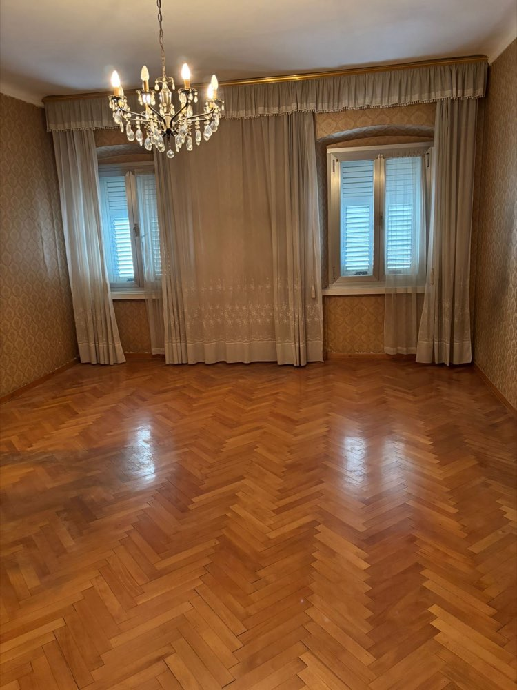
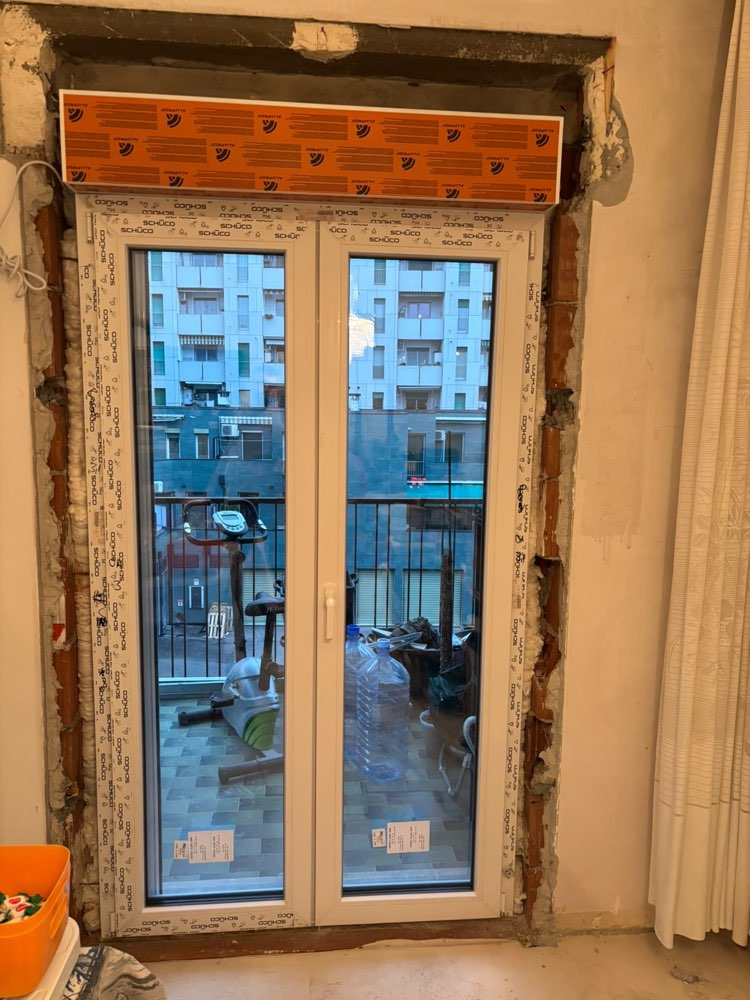

Impresa di costruzioni · Trieste
Dal cantierealla casa finita,a Trieste.
Bagni, cucine, pavimenti, serramenti, scavi. Tutte le foto di questa pagina vengono dai nostri cantieri.

su Google2 recensioni
Una nostra cucina
- SedeVia Udine 1/H-I, Trieste
- OrariIl lunedì dalle 9:00
- ReferentiAntonio e Dario Terracciano
- FormaS.r.l.
I cantieri
Cinque lavori, cinque foto nostre.
- 01ScaviCon il miniescavatore, anche in giardino.
- 02MassettiLa stanza spogliata, il fondo rifatto a livello.
- 03SerramentiFinestre nuove nei muri delle case triestine.
- 04BagniGrandi lastre effetto marmo, dal pavimento in su.
- 05PavimentiParquet a spina di pesce in un appartamento classico.






Chi siamo
Antonio e Dario Terracciano.
Terracciano Costruzioni è una S.r.l. con sede in Via Udine, a Trieste. Ai clienti rispondono loro, di persona, anche su Google.
«Ringrazio e porgiamo i nostri distinti saluti, Antonio e Dario Terracciano»
Risposta a una recensione Google a 5 stelle
Come lavoriamo
Dal sopralluogo alla consegna.
- 01
Sopralluogo
Veniamo a vedere la casa e ascoltiamo cosa volete cambiare.
- 02
Preventivo
Lavori e costi scritti voce per voce, prima di cominciare.
- 03
Cantiere
Demolizioni, impianti, massetti, posa: una sola impresa.
- 04
Consegna
La casa pulita e finita, pronta da abitare.
Contatti
Raccontateci il lavoro. Vi richiamiamo.
- Telefono040 260 6163
- SedeVia Udine 1/H-I, 34135 Trieste
- Orari
Il lunedì dalle 9:00